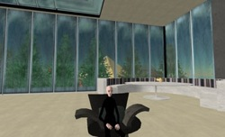

Visiting Ars Virtua (note that this is a legacy page)
To visit Ars Virtua simply create a free account in Second Life and run the current client. Once you have this properly installed follow one of these links: (Kligerman AVAIR / permanent collection) (Streaming Museum) (new exhibits)
About Ars Virtua
Ars Virtua is a New Media Center and Gallery located primarily in the synthetic world of Second Life. Located in Dowden and Seventh Eye, Ars Virtua has created both a "permanent" exhibition space and a place for rotating exhibits. With a 4000 meter two story permanent collection in Dowden and a total of 24000 meters between all our locations, Ars Virtua facilitates exploratory ventures in synthetic worlds. The Ars Virtua Artist in Residence (AVAIR) which supports artists both in Second Life and World of Warcraft expands beyond Second Life to include the most popular fantasy game played online in the US. Ars Virtua is committed to research and furthering the dialogue around synthetic worlds, the 3D web and the creation of native art in new mediums.

Second Life is a 3D online persistent space totally created and evolved by its users. Within this vast and rapidly expanding place, you can do, create or become just about anything you can imagine. Built-in content creation tools let you make almost anything you can imagine, in real time and in collaboration with others. An incredibly detailed digital body ('Avatar') allows a rich and customizable identity. A physics simulation running on a backbone of numerous connected computers allows you to be immersed in a visceral, interactive world. The ability to design and resell 3D content, combined with the ability to own and develop land and a microcurrency, which can be exchanged to real money creates a fertile new world for artistic exploration.

- To enhance the public's understanding of constructed/synthetic worlds, how they are similar and how they differ from our own world
- To develop the medium for art production, and to be a laboratory for the formation of new art practices
- To provide a platform for the intersection of media and the information/knowledge fields
- To promote the development of a commons in networked space, a place where ideas can be exchanged across physical borders inside a shared experiential space
Credits
James Morgan - Director Ars Virtua
John Bruneau - Webmaster, Machinimist, Maker of things
Thomas Asmuth - Special Projects Coordinator
Ethan Miller - Archive Project Lead
Kyungwha Lee - Conference Coordinator
Aaron Siegel - Founding Member, Curator Transposition
Chris Head - Founding Member
David Cheung - WoW Project Lead
Michael Lowell - Exhibitions Coordinator
Bennett Goble - Coder in Residence
Neural Blanks - Architect
Ama Ree - Master of Walking and in World Navigation
Vroom Stilman - Liason for Fun
Special Thanks
Joel Slayton
Jo-Ann Green
AVAIR Jurors
Jay Van Buren
Amy Wilson
Eddo Stern (WoW)
Conceptual Collaborators
Dore Bowen
Laura Jones
Carlos Castallanos
Helen Thorington
Bruce Gardner
Brad Kligerman (AVAIR)
Sponsors
CADRE Laboratory for New Media
turbulence.org
New Radio and Performing Arts, Inc., (aka Ether-Ore)
The Jerome Foundation